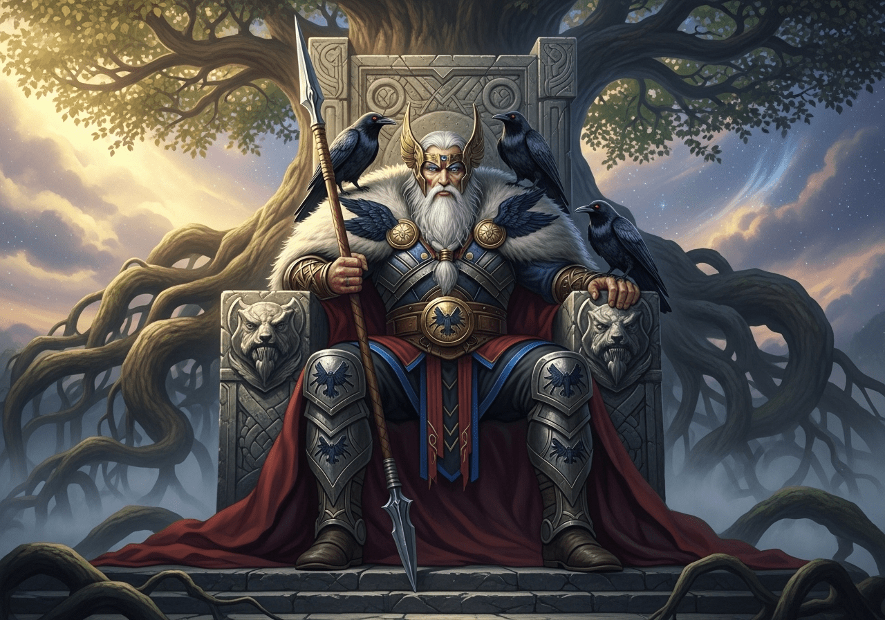

Cosmic Problems, Get a Divine Solution.
From rogue frost giants in your garden to existential dread on a cosmic scale, the All-Father has seen it all. Leverage millennia of wisdom and unmatched power to resolve your mortal quandaries. Swiftly. Decisively.
Divine Interventions, in a Flash

Lost Knowledge & prophecy
Misplaced you car keys or the meaning of life? Our seers can locate lost items or provide unparalleled foresight for your next big venture.

Conflict Resolution
From hostile corporate takeovers to neighborly disputes over property lines, we provide decisive mediation. Result guaranteed.

Runic Warding & Protection
Secure your home, business, or digital assets from all manner of threats, both seen and unseen. Custom enchantments available.

Poetic Inspiration & Victory
Afflicted with writer's block or a lack of competitive fire? Tap into the source of skaldic poetry and berserker might.
I had a Kraken problem. A big one.odin showed up, gave the beast a stern look, and offered some surprisingly insightful advice on long-term naval strategy. Haven't seen a tentacle since. 10/10 would summon again.
Your Bifrost to a Brighter Future Awaits!
Don't let moral troubles fester. Reach out across the realms for a consultation.